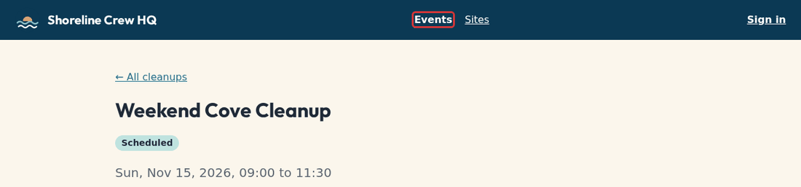
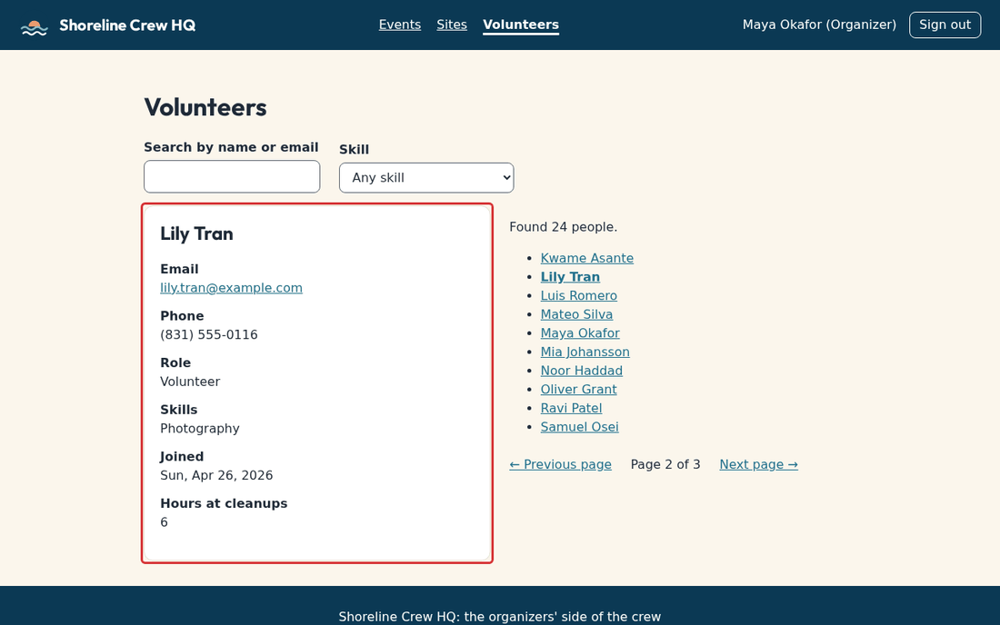

React + TypeScript · Part 2 · Session 15 of 26 · 3 hours
Session 15
React Router 8, Search Params and Nested Routes
The address chooses the page, then it carries the view.
Today
Three hours, two lessons
| 0:00 | Warm-up: from Session 14 to routes |
| 0:10 | 6.1 React Router 8: model, demo, lab |
| 0:55 | 6.1 Project: Steps 1 to 3 |
| 1:20 | Break (10 min) |
| 1:30 | 6.2 Search params and nested routes: model, demo, lab |
| 2:20 | 6.2 Project: Steps 1 and 2 |
| 2:50 | Exit ticket, homework, what to bring next time |
LABS Lab files are in
labs/module-15. Work in starter/, never the solution.Warm-up · 10 minutes
From Session 14
<Button as="a" href=…>: what will the router change, and where?- Tabs use
useState(defaultTab): when is the default used? - Every header link is a plain
<a href>: what does a click cost?
CATCH UP Behind? Unzip
lesson-21-start, npm install, start the API.6.1
React Router 8
The board at the parking lot: the beach stays where it is.
6.1 · Mental model
The meeting-point board
- The address: what a visitor is looking for
- The route list: the board
- The page: the spot the board points to
- The beach stays: header, signed-in user, loaded code
WATCH The server must still answer every address with the app (Lesson 10.2).
6.1 · Why a router
Plain links versus router links
- Plain: loads the app again
- HTML, JavaScript, fonts, data
- State outside the page is lost
- Your own ifs and a regex
- Router: renders the new page
- Only the page's data is fetched
- Header and session stay
- A route list with parameters
WHY Data mode: route objects in
createBrowserRouter. Lesson 6.3's loaders need it.6.1 · Live demo
The HQ's route list
shoreline-hq/src/App.tsx
// A route without a path: it adds the error page and keeps the layout around it errorElement: <PageCrashed />, children: [ { index: true, element: <HomePage /> }, { path: 'events', element: <EventsPage /> }, { path: 'events/new', element: <NewEventPage /> }, { path: 'events/:eventId', element: <EventPage /> }, { path: 'sites', element: <SitesPage /> }, { path: 'sign-in', element: <SignInPage /> }, { path: '*', element: <NotFoundPage /> }, ],
WHY Relative child paths · :eventId is a parameter · ranking, not order, decides
6.1 · Live demo
TypeScript checks every route
src/Scratch.tsx:7:3 - error TS2322: Type '{ index: true; element: JSX.Element; children: [{ path: string; element: JSX.Element; }]; }' is not assignable to type 'RouteObject'.
Found 1 error in src/Scratch.tsx:7
Types of property 'children' are incompatible.
Type '[{ path: string; element: Element; }]' is not assignable to type 'undefined'.
WHY
index: true picked the index member of the union: no children allowed.6.1 · Layout route
AppLayout renders the page at its Outlet
shoreline-hq/src/components/AppLayout.tsx
return ( <> <a className={styles.skipLink} href="#main"> Skip to main content </a> <Header /> <main id="main" ref={mainRef} tabIndex={-1} className={styles.page}> <Outlet /> </main> <Footer /> <ScrollRestoration /> </> )
WHY
tabIndex={-1}: a script can focus main; the Tab key never stops on it.6.1 · Live demo
Link takes to, not href
import { Link } from 'react-router' export function BackToList() { return <Link href="/events">← All cleanups</Link> }
src/Scratch.tsx:4:16 - error TS2322: Type '{ href: string; children: string; }' is not assignable to type 'IntrinsicAttributes & LinkProps & RefAttributes<HTMLAnchorElement>'.
Found 1 error in src/Scratch.tsx:4
WHY A Link is still a real
<a href>: middle-click and Copy link work.6.1 · NavLink
The link that knows it is current

WHY Style
[aria-current='page'], not .active: CSS Modules rename classes.6.1 · useParams
The page asks the router for its id
shoreline-hq/src/pages/EventPage.tsx
export function EventPage() { const { eventId } = useParams() const { session } = useAuth() const viewer = session?.user.id ?? 'guest' if (eventId === undefined) { throw new Error('EventPage needs a route with an :eventId parameter') }
WHY
string | undefined: the page cannot see the route list. Then key={eventId}.6.1 · Same route, new parameter
Give it a key
- Cleanup to cleanup: the route stays the same
- React keeps EventPage and every state inside it
- Tabs keep
useState(defaultTab)from the last cleanup key={eventId}on the boundary: fresh boundary, Suspense, tabs
WATCH Measured without a key: no tab selected, zero visible panels.
6.1 · When a page crashes
Where the errorElement goes

WATCH On the layout route: no header. On no route: React Router's own screen.
6.1 · After the page changes
Focus the new page, not the old link
shoreline-hq/src/components/AppLayout.tsx
// After a link changes the page, start reading from the new page, not from the old link useEffect(() => { if (pathname !== shownPath.current) { shownPath.current = pathname mainRef.current?.focus({ preventScroll: true }) } }, [pathname])
WHY The ref skips the first page;
<ScrollRestoration /> handles the scroll.6.1 · The cost
npm run build
dist/assets/index-DvwWjq85.css 7.58 kB │ gzip: 2.43 kB dist/assets/index-Dh0UlpjM.js 373.80 kB │ gzip: 118.16 kB ✓ built in …ms
WHY 170 modules, 373.80 kB: about 98 kB for the router (Lesson 10.1 splits it).
6.1 · Guided lab · 15 minutes
A site guide with a real router
labs/module-15/l6_1-react-router-8/starternpm installonce, thennpm test: 7 fail, 1 passes- Task 1: a layout, a pathless errorElement route, the pages, *
- Task 2: router links,
useParams<'siteId'>(), NavLink
MORE Finished? Task 3 (focus after a navigation), then the debug handout.
6.1 · Project · Steps 1 to 3
Real navigation for the HQ
npm install react-router, then App.tsx holds the route list- AppLayout:
<Outlet />, the focus effect,<ScrollRestoration /> - NotFoundPage:
/volunteersshows Page not found, header included - At home: links everywhere, EventPage reads its id, the walk-through
PROJECT Two red underlines after Step 1 are your to-do list. Behind?
lesson-22-start.10
Break
Back at 1:30. No router yet? Unzip lesson-22-start now.
6.2
Search Params, Nested Routes and Typed Navigation
The notice on the harbor board.
6.2 · Mental model
Would someone bookmark it or send it?
- In the address
- Search text and filters
- The page number of a list
- Which item is open
- In components
- An open dialog, a draft form
- Hover, focus, a toggle
- Secrets: never in an address
WHY
/events is the path (the router); ?q=pelican&status=completed is for the page.6.2 · Live demo
URLSearchParams, in Node
const params = new URLSearchParams('q=pelican point&status=completed') console.log(params.get('q'), params.get('page'), params.has('status')) console.log(params.getAll('skill')) params.set('q', 'jetty') console.log(params.toString())
pelican point null true [] q=jetty&status=completed
WHY
get decodes and returns string | null.6.2 · Live demo
Every value is a string, or missing
import { useSearchParams } from 'react-router' import type { StatusFilter } from './components/EventFilters.tsx' export function StatusLine() { const [searchParams] = useSearchParams() const status: StatusFilter = searchParams.get('status') ?? 'all' return <p>Status: {status}</p> }
src/Scratch.tsx:6:9 - error TS2322: Type 'string' is not assignable to type 'StatusFilter'. Found 1 error in src/Scratch.tsx:6
WATCH The address is input from outside the app: check it, then trust it.
6.2 · The fix
A type predicate, not an as
shoreline-hq/src/utils/searchParams.ts
export function readParam<T extends string>( params: URLSearchParams, name: string, isT: (value: string) => value is T, ): T | undefined { const value = params.get(name) return value !== null && isT(value) ? value : undefined }
WHY
T is inferred from isEventStatus; ?? 'all' adds the default.6.2 · Live demo
The helpers on awkward values
"" -> 1 "page=2" -> 2 "page=zero" -> 1 "page=2.5" -> 1 "page=0" -> 1 q=pelican | q=pelican&status=completed
WHY
withParam changes a COPY: copy, don't mutate, like React state.6.2 · Writing
Push for choices, replace for typing
shoreline-hq/src/pages/EventsPage.tsx
// Typing: replace the history entry (Back skips the letters), and update the box right away function setQuery(next: string) { setSearchParams((current) => withParam(current, 'q', next), { replace: true, flushSync: true, }) }
WATCH Router updates are transitions: without
flushSync the box lost letters.6.2 · Nested routes
The crew page and its child
shoreline-hq/src/App.tsx
path: 'volunteers', element: <VolunteersPage />, // Nested routes: they render inside VolunteersPage, at its <Outlet /> children: [ { index: true, element: <p>Pick a name from the list to see their details.</p> }, { path: ':volunteerId', element: <VolunteerPage /> }, ], },
WHY The child renders at VolunteersPage's own Outlet; the list stays mounted.
6.2 · Relative links
Keep the search on the link

WHY
{ pathname, search } keeps the query; { search } keeps the path.6.2 · GET /api/volunteers
Hiding a page is not protecting it
HTTP/1.1 401 Unauthorized
{
"error": "unauthorized",
"message": "Sign in first."
}
HTTP/1.1 403 Forbidden
{
"error": "forbidden",
"message": "Only organizers can do that."
}
WHY No token, then a volunteer's token. The API is the guard; Lesson 6.3 adds a protected route.
6.2 · Typed navigation
Name the parameter you read
export function Typed() { const { volunterId } = useParams<'volunteerId'>() return <p>{volunterId}</p> }
src/Scratch.tsx:9:11 - error TS2339: Property 'volunterId' does not exist on type 'Readonly<Params<"volunteerId">>'. Found 1 error in src/Scratch.tsx:9
WHY Without the type argument the same typo compiles and reads undefined forever.
6.2 · Typed navigation
href() versus generatePath()
src/Scratch.tsx:9:68 - error TS2741: Property 'volunteerId' is missing in type '{ volunterId: string; }' but required in type '{ [x: string]: string | null | undefined; volunteerId: string; }'.
Found 1 error in src/Scratch.tsx:9
WHY One error, from generatePath. In data mode href accepts any path: test a promise with a typo.
6.2 · Guided lab · 20 minutes
A cleanup log with its filters in the address
labs/module-15/l6_2-search-params-nested-routes-and-typed-navigation/starternpm test: 8 fail ·npm run typecheck: 1 error- Task 1:
readChoice<T>(no as) andwithParamson a copy - Task 2: the filters read from and written to the address
MORE Finished? Task 3: a nested route whose links keep the search.
6.2 · Project · Steps 1 and 2
Filters in the address

PROJECT At home: Steps 3 to 7, the crew page and its nested route.
Wrap-up · 4 minutes
Exit ticket
- The three routes between
/and HomePage: what does each add? /events?q=pelican&status=completed: who reads which part? The type of get?- Page 2 of the crew: why must a name link pass the search along?
WHY No notes. Workbook Exit Ticket box or a sticky note on the way out.
Before Session 16
Homework and bring list
- Finish both projects; Exercises 1 and 2 of each; both quizzes and journals
- Labs: the remaining tasks and the debug handout
- Signed out, open
/events/newby typing it: notice what happens - Bring: the HQ at the end of 6.2 (or
lesson-23-start), the API, the accounts
NEXT Session 16: Data Loading and Protected Routes, and the Part 2 project.